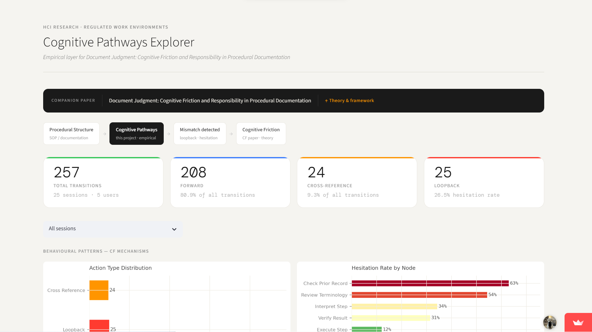
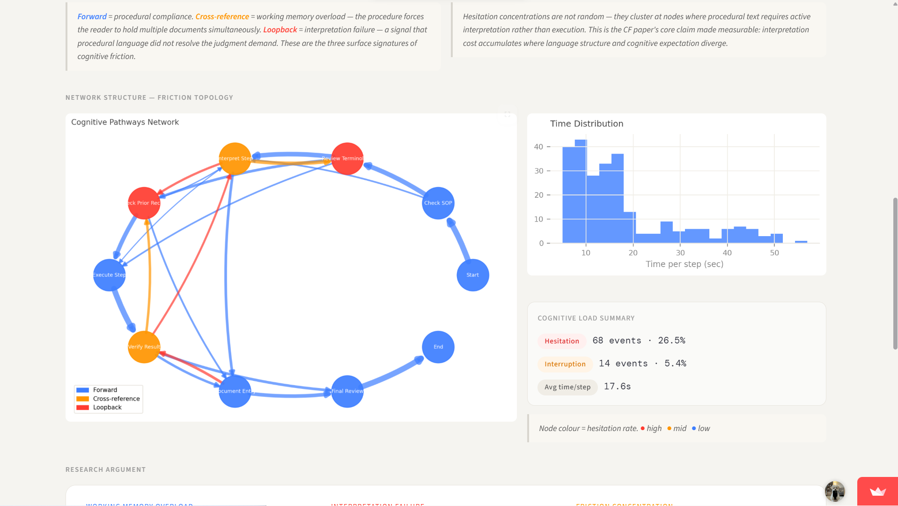

A human-centered project focused on reconstructing how people actually move through GMP documentation workflows — and on showing how documentation pressure produces the kinds of cognitive friction developed more theoretically in the CF paper.
In GMP environments, procedures are written as linear sequences. However, real cognition is non-linear: users revisit, compare, and reconstruct meaning across sections.
This project connects directly to the Cognitive Friction paper, which argues that procedural systems often shift interpretive burden onto the user instead of resolving it within the document.
Synthetic pathway data was generated to model how users navigate documentation, including forward transitions, loopbacks, and cross-references. These were visualized using a Streamlit-based prototype.

Shows how users actually move through procedural steps including loops and revisits.

Highlights non-linear transitions where cognitive friction emerges.
The project demonstrates that documentation workflows are not followed linearly in practice. Instead, users adapt dynamically, revealing hidden cognitive burden.
This work serves as the empirical companion to the Cognitive Friction paper. While the CF paper explains friction structurally, this project shows how it appears in real navigation behavior.
Reconstructed cognitive pathways in GMP workflows to make hidden interpretive burden visible as a structural design issue.